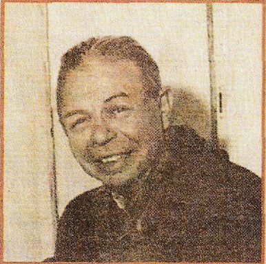
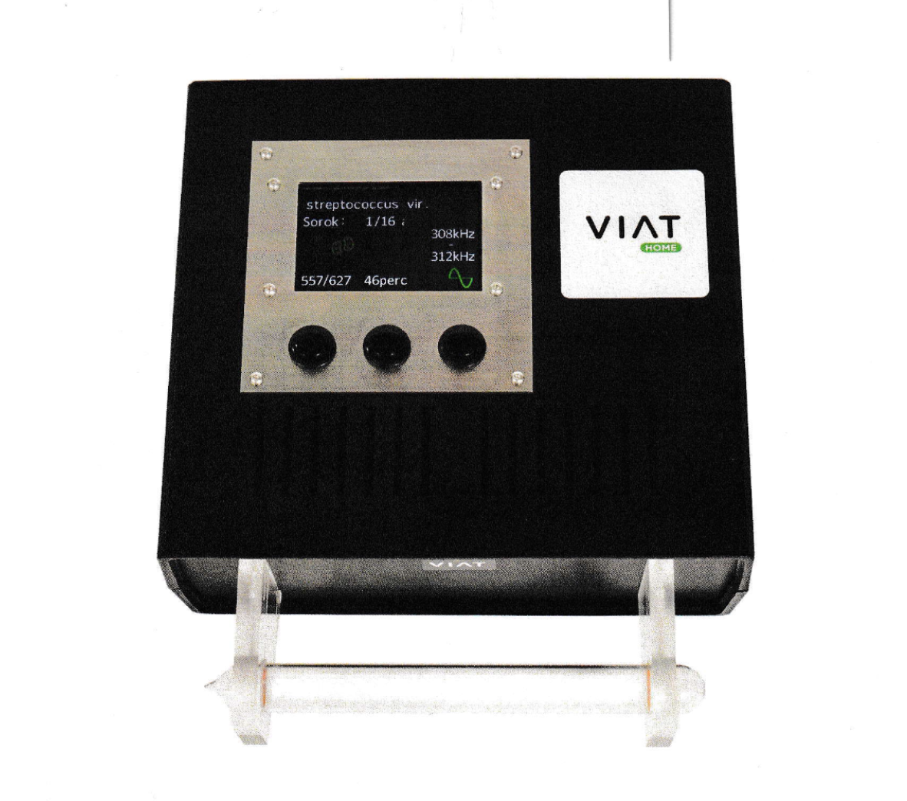
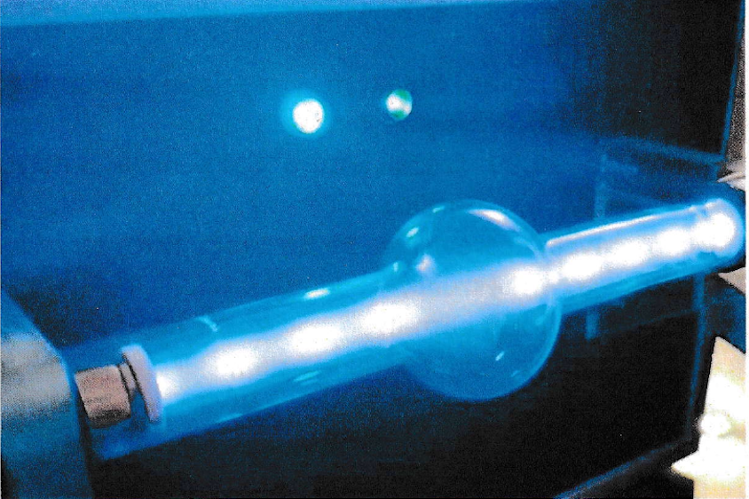

Frekvenciakezelés
Rezgésgyógyászat és Frekvenciaterápia

A frekvenciakezelés gyökerei az 1930-as évekre nyúlnak vissza, amikor Ifj. Royal Raymond Rife (1888-1971) tudós, biokémikus és mikrobiológus egy korszakalkotó felfedezést tett. Rife megalkotta az univerzális vírus-mikroszkópot, amely 60.000-szeres nagyításával és 10 nm-es felbontóképességével messze felülmúlta a kor (és bizonyos szempontból a mai) elektronmikroszkópjait. Legnagyobb előnye az volt, hogy látható fényspektrummal működött, így Rife – a világon elsőként – élőben, mozgás közben és saját, természetes színükben (pl. lilás-vörös kisugárzással) tudta vizsgálni a vírusokat és baktériumokat anélkül, hogy elpusztította volna a mintákat.A rezonancia ereje: Hogyan pusztulnak a kórokozók?
Rife megfigyelte, hogy minden egyes kórokozónak (vírusnak, baktériumnak, gombának) van egy saját rezonáns frekvenciája, amely sebezhetővé teszi. Audio-spektrumú, hélium gázcsövekkel működő készülékével célzottan ezeket a halálos oszcilláló frekvenciákat (MOR) sugározta a sejtekre. A hatás döbbenetes volt: a kórokozók a saját frekvenciájuktól percek alatt felrobbantak, szétesett a szerkezetük, miközben az emberi szövetekre a sugárzás semmiféle hatással nem volt.
1934-ben a Dél-Kaliforniai Egyetem orvosi bizottsága felügyelete alatt 16 végstádiumú rákos beteget kezeltek a módszerével. Három hónap alatt 14 beteg teljesen felépült, a fennmaradó kettő pedig további 4 hét kezelés után gyógyult meg – ez 100%-os sikerarány volt, teljesen fájdalommentesen. Rife korai munkásságát a Heidelbergi Egyetem díszdoktori címmel ismerte el.
"Csak egy csont-zsák volt. [...] Odavonszolta magát egy vizsgálati asztalra, már a rák legutolsó fázisában... a gerince és a köldöke majdnem összeért. Szóval odaraktam a kezem a gyomrára, ami egy kemény tömeg volt, ahol egy teljes maroknyi, közel szív alakú daganat volt kitapintható. Nos, adtak neki egy kezelést a Rife frekvenciákkal és két hónapig tartó kezelés után, a legnagyobb megdöbbenésemre, a beteg teljesen felépült."
– Dr. James Couche (1956)
 Sajnos ezt a forradalmi és olcsó gyógymódot (melyről Barry Lynes is átfogóan ír "Rezgésgyógyászat - A sztori, a korrupció és az ígéret" című könyvében) a korabeli orvostársadalom és gazdasági érdekcsoportok hevesen támadták. Rife laboratóriumai rejtélyes módon leégtek, munkatársait megfenyegették vagy megmérgezték (mint Dr. Milbank Johnsont 1944-ben, órákkal egy sajtótájékoztató előtt), iratait elkobozták és megsemmisítették, Rife-ot magát pedig bíróság elé hurcolták.
Sajnos ezt a forradalmi és olcsó gyógymódot (melyről Barry Lynes is átfogóan ír "Rezgésgyógyászat - A sztori, a korrupció és az ígéret" című könyvében) a korabeli orvostársadalom és gazdasági érdekcsoportok hevesen támadták. Rife laboratóriumai rejtélyes módon leégtek, munkatársait megfenyegették vagy megmérgezték (mint Dr. Milbank Johnsont 1944-ben, órákkal egy sajtótájékoztató előtt), iratait elkobozták és megsemmisítették, Rife-ot magát pedig bíróság elé hurcolták.
A modern technológia: Viat Plasmawave

Az utóbbi évtizedekben a Rife-féle technika újraéledt. Stúdiónkban a nürnbergi székhelyű cég által fejlesztett, szabadalmi eljárás alatt álló Viat plasmawave elektromágneses plazmasugárzó készüléket alkalmazzuk. Ez a modern, számítógéppel vezérelt eszköz kontaktus nélküli frekvenciasugárzást bocsát ki egy plazmacsövön keresztül.

A plazmacső vákuumozott nemesgáztöltést tartalmaz (1,5 MHz frekvenciagerjesztéssel). A készülék az ultrahangtól a rövidhullámokig (10 Hz – 1 MHz) képes közel lineárisan, szinuszosan váltakozva sugározni. A mágnesesen 90 fokkal eltolt, gömbsugárzóként működő plazmacső biztosítja, hogy a frekvencia a szerves organizmusok legmélyebb belsejében is kifejtse a kívánt hatást.Hivatalos vizsgálatokkal igazolt hatékonyság
A Viat technológiáját számos intézmény, köztük a győri Széchenyi István Egyetem, az RT-Europe Research Center és a Nemzeti Népegészségügyi Központ is tesztelte. Az eredmények magukért beszélnek:
- Több mint 99%-os hatékonyság: A laborvizsgálatok alapján a megfelelő értékben beállított programokkal a kórokozók szinte maradéktalanul elpusztíthatók. Kimutatták többek között a Candida albicans (99,99%), Salmonella enterica (99,99%), Bacillus cereus (99,99%) és a Saccharomyces cerevisiae (99,88%) pusztulását.
- Tökéletes biztonság: A hivatalos sugárbiológiai laborvizsgálat igazolja, hogy a készülék működése során a humán testszöveteket egyáltalán nem károsítja, azokra teljesen veszélytelen.
- Mutáció-független: Az eljárás hatalmas előnye, hogy a kórokozók mutálódása a frekvenciaértékek szempontjából nem jelentős, így nem kell új vírustörzsek esetén a vakcinák kifejlesztésére várni. Kiemelkedő eredményeket értek el (350-358 kHz között) például a sertés PRRSV vírus szaporodóképességének megállításában is.
Fontos jogi és egészségügyi nyilatkozat
Felhívjuk figyelmét, hogy a Viat plasmawave készülék nem minősül orvostechnikai eszköznek, és a jelenleg hatályos jogszabályok alapján hivatalosan gyógyítási célra nem használható. A kezelés alternatív, közérzetjavító szolgáltatásként vehető igénybe, és nem helyettesíti a szakszerű orvosi diagnózist és ellátást. (CE tanúsítvány száma: EB203829001)